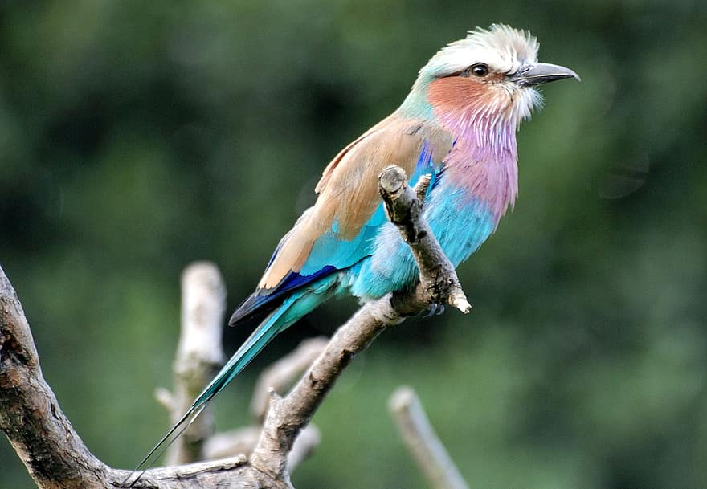
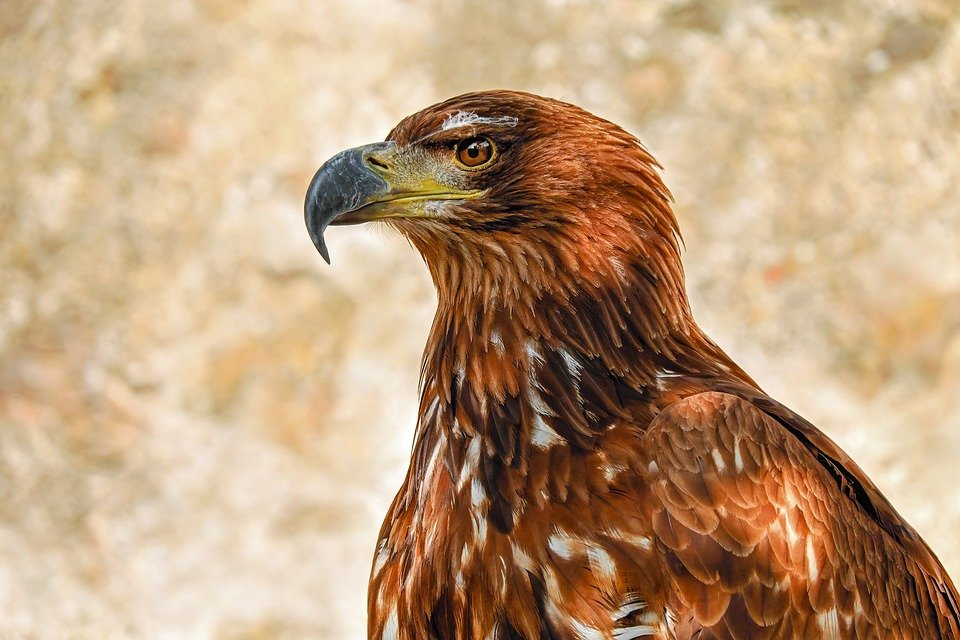
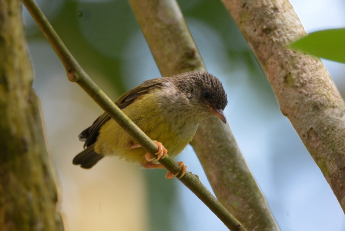
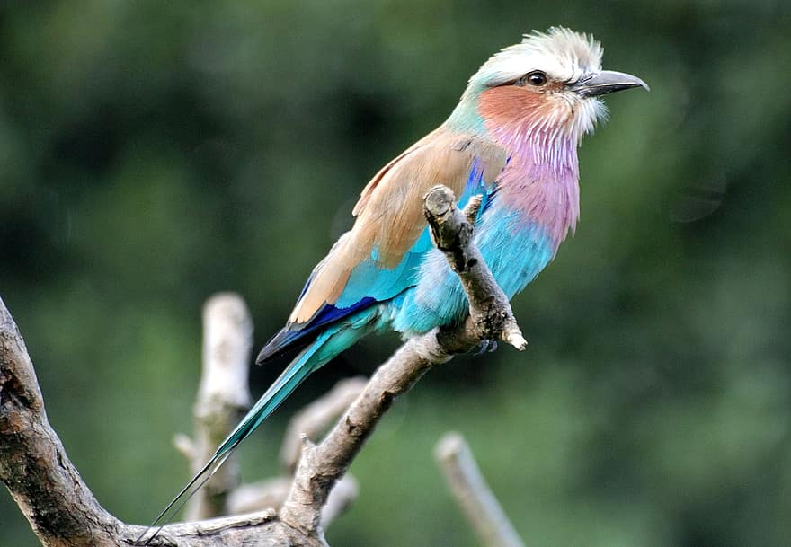
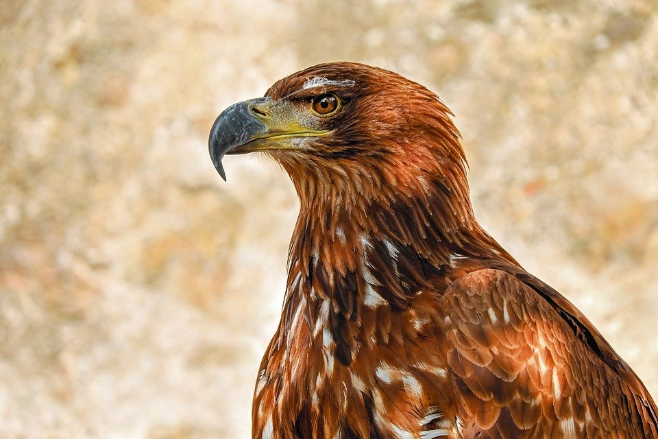
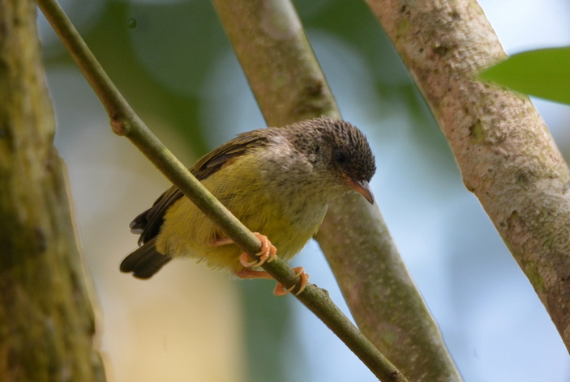
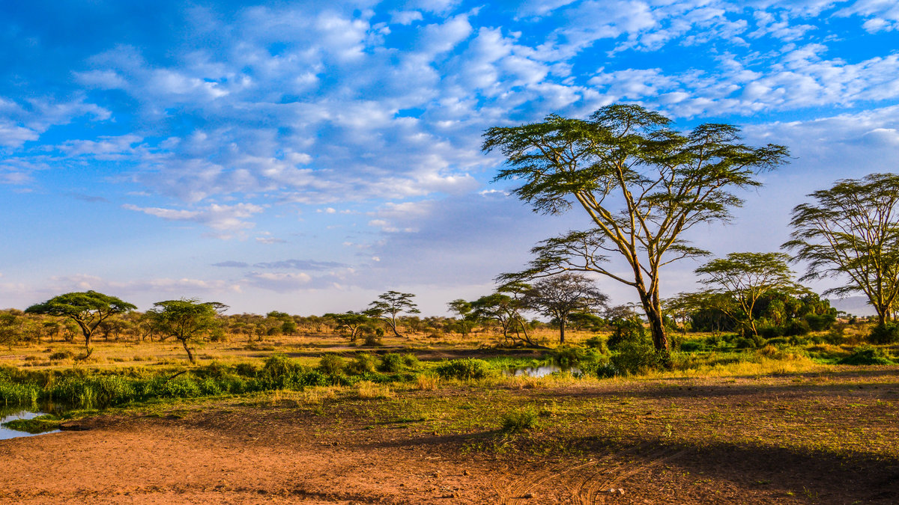

Жираф
Благодаря природной грации и впечатляющей длинной шее жираф (Giraffidae) стал настоящим украшением саванны, которое первооткрыватели считали помесью леопарда и верблюда. Рост половозрелых взрослых особей варьирует, как правило, в пределах 5,5-6,1 м., треть из которых приходится на шею. Кроме необычной шеи жирафы обладают языком, длина которого достигает 44-45 см. Рацион этого саванного животного представлен преимущественно сочной листвой деревьев.

Саванный слон
Самое крупное из существующих на сегодняшний день наземных млекопитающих, относящееся к роду африканских слонов и отряду хоботных. Саванные слоны (Loxodonta africana) отличаются тяжёлым и очень массивным телом, толстыми конечностями, большой головой, располагающейся на довольно короткой шее, огромными ушами, а также мускулистым и длинным хоботом, очень необычными верхними резцами, которые превратились в процессе эволюции в сильные бивни.
Носорог
Непарнокопытное саванное млекопитающее, относящееся к относительно крупному семейству носороговые (Rhinocerotidae). Сухопутное толстокожее животное обладает длинной и узкой головой с круто опускающейся лобной зоной. Взрослые носороги отличаются массивным телом и довольно короткими, мощными и толстыми конечностями, на каждой из которых присутствует по три пальца, характерно завершающихся относительно широкими копытами.
Лев
Главный хищник саванны (Panthera leo) – относительно крупное млекопитающее, представитель рода пантер и подсемейства больших кошек. Являясь рекордсменом по показателям высоты в плечах среди кошачьих, лев характеризуется хорошо выраженным половым диморфизмом и наличием пушистого пучка – «кисточки» на кончике хвоста. Грива визуально способна увеличить взрослых львов в размерах, что помогает зверям запугивать других половозрелых самцов и легко привлекать половозрелых самок.
Египетская кобра
Достаточно крупная ядовитая змея (Naja haje) из семейства аспидов является одним из довольно широко распространённых обитателей африканской западной саванны. Сильнодействующий яд, вырабатываемый взрослыми змеями, способен убить даже взрослого и крепкого человека, что обусловлено нейротоксичным действием. Длина половозрелой особи может достигать трёх метров. Окрас, как правило, одноцветный: от светло-жёлтых оттенков до тёмно-коричневого окрашивания, с довольно светлым брюхом.
 





Природа Саванны
Саванны представляют собой тропические луга, в которых преобладает травянистая растительность. Большая часть африканской саванны находится в субэкваториальном климатическом поясе Африки, между 15° с. ш. и 30° ю. ш. Саванны расположены в таких странах, как: Гвинея, Сьерра-Леоне, Либерия, Кот-д’Ивур, Гана, Того, Бенин, Нигерия, Камерун, Центральноафриканская Республика, Чад, Судан, Эфиопия, Сомали, Демократическая Республика Конго, Ангола, Уганда, Руанда, Бурунди, Кения, Танзания, Малави, Замбия, Зимбабве, Мозамбик, Ботсвана и Южная Африка.
Саванна характеризуется травами и небольшими или разбросанными деревьями, которые не образуют закрытого купола (как в тропическом дождевом лесу), позволяя солнечному свету добираться до земли. Африканская саванна содержит разнообразное сообщество организмов, которые взаимодействуют и образовывают сложную пищевую сеть.
Здоровые, сбалансированные экосистемы состоят из множества взаимодействующих пищевых цепей, называемых пищевыми сетями. Плотоядные животные (львы, гиены, леопарды) питаются растительноядными (импалами, бородавочниками, крупным рогатым скотом), которые потребляют продуцентов (травы, растительные вещества). Падальщики (гиены, стервятники) и редуценты (бактерии, грибы) разрушают останки живых организмов, и делают их доступными для продуцентов. Люди также являются частью биологического сообщества саванны и часто конкурируют с другими организмами за еду.